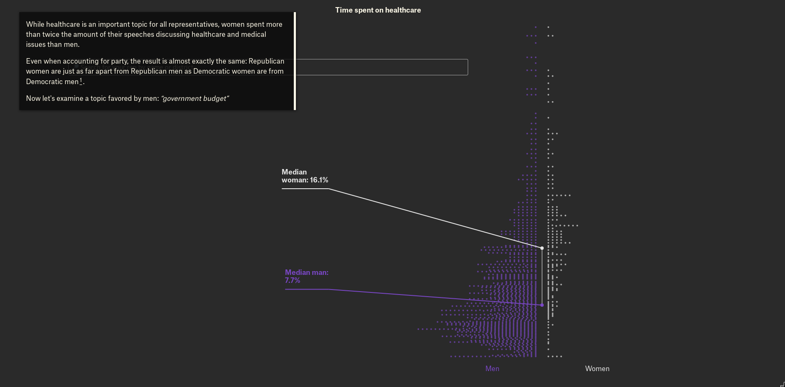

If you're a researcher in the social sciences or a journalist working on news in the public interest, then I encourage you to contact me about how software I have developed for my own research can help you in your work.
Over the course of the past few years, I have developed and continue to maintain a small number of open source software packages. More information is available at my GitHub profile, but here are some highlights of interest:
Originally developed by programmers at Sunlight Labs, congressional-record is a parser that extracts structured data and text from the Congressional Record, a near-verbatim, official account of proceedings on the floor of the United States Congress. The core purpose of this parser is to extract text entered into the Record by members of Congress --- either in a floor speech, inserted as a supplement, or submitted as an extension of remarks --- and correctly assign each speech to a speaker. I began work on this project in late 2014 and began releasing code in 2015. In 2017 I became the primary maintainer for this repository and a contributor to The United States Project, a shared commons of data and tools for the United States.
My fork of this software includes changes to the parser that substantially eliminate false negatives, that is, speeches that should be recognized as a new speech and assigned to a speaker. I also make additional use of metadata released with the speeches by the Library of Congress to increase the number of correct assignments of speeches to speakers. In addition, I rewrote the code to produce output in JSON or CSV, rather than XML.
 The data journalist Durand D'Souza used my code in this visualization of gender representation in Congress.
I'm happy to see other researchers using this code in their research:
Poindexter downloads, cleans and parses data on so-called "527" political organizations from the Internal Revenue Service. The IRS releases this data in a form that is not immediately accessible using open-source tools; poindexter fixes that. I originally developed this software while working as a summer fellow at The Sunlight Foundation.
 Nick Judd
Nick Judd